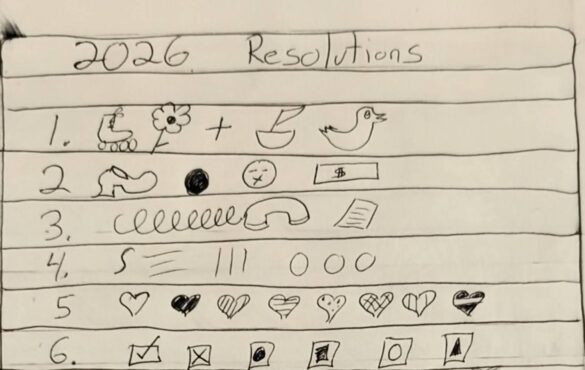

Canceled: Drink & Draw: New Year’s Resolutions with Meg and Avery
This event has been canceled
Drink & Draw: New Year’s Resolutions with Meg and Avery
Come have a drink with us!
Join us for a very special Drink & Draw on January 14.
In this session, staff members Meg Duguid and Avery Johnson will lead a session in writing and creating New Year’s resolutions.
We may also make you a new year’s cocktail.
Not only are Meg and Avery vowing to become better, stronger, and more balanced people, they will walk you through the nuance of self-reflection, reasonable goal setting, and how to take your resolutions both seriously. And not.
Be prepared to make a list and draw it out in symbols that maybe only you know the meaning of.